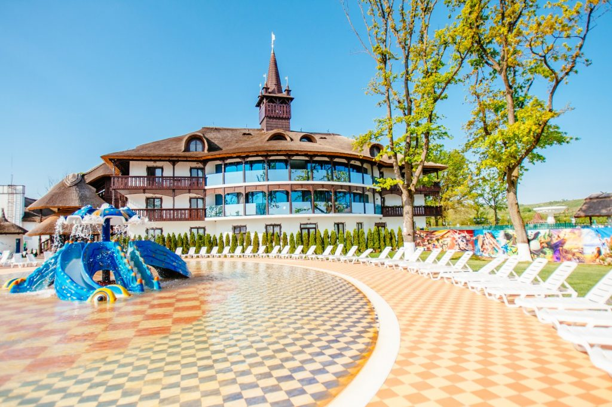
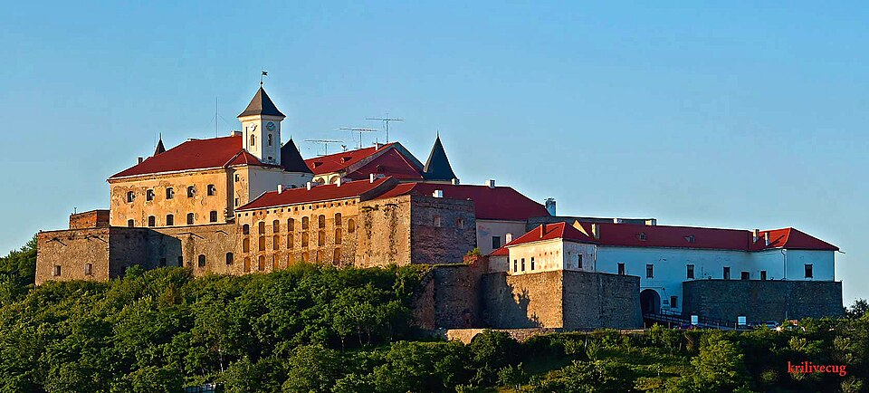
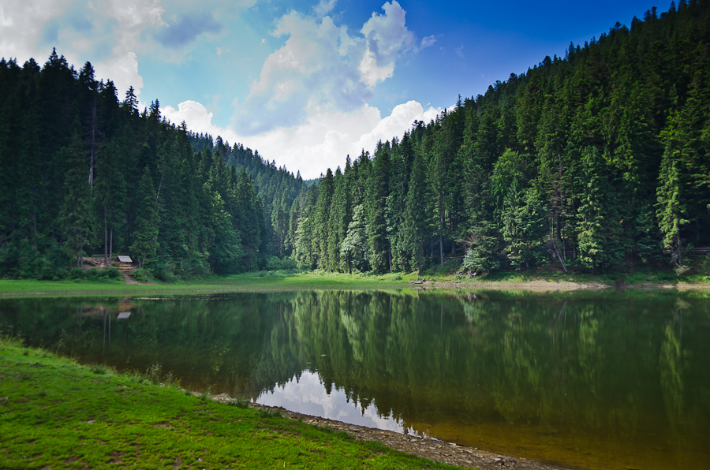
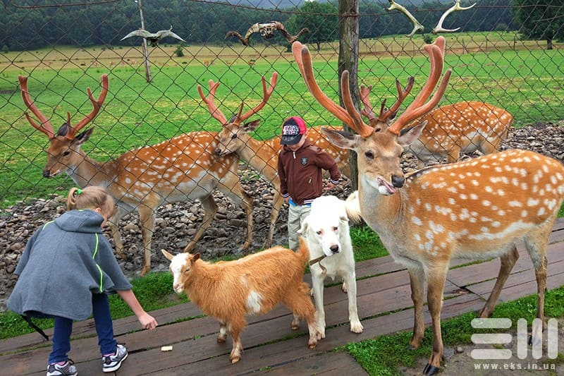
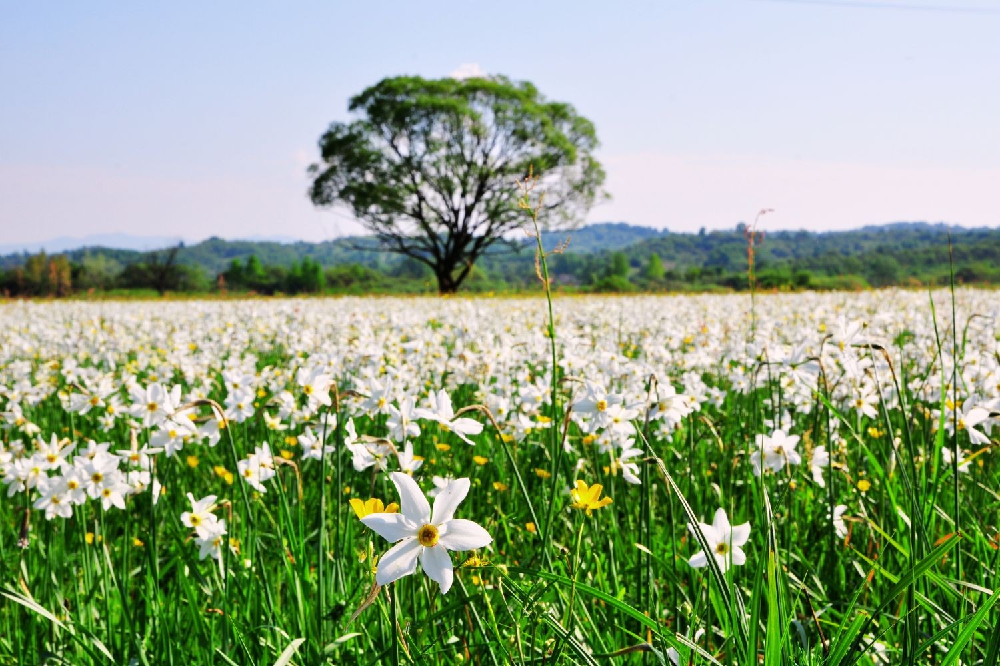

Великий комплекс із теплими басейнами, гірками та дитячими зонами. Підходить для відпочинку в будь-яку пору року.
Ось різноманіття басейнів, які знаходяться на теритроії комплексу:

Справжній середньовічний замок, де дітям цікаво досліджувати башти, подвір’я та слухати легенди.
Замок Паланок у Мукачеві — це не просто стара фортеця на горі. Це місце, де переплелися середньовічна архітектура, легенди, оборонна історія, князівські постаті та багатовікова боротьба за владу. Саме тому Мукачівський замок вважається однією з головних туристичних локацій Закарпаття.

Найвідоміше озеро Карпат. Легка прогулянка навколо та свіже гірське повітря ідеально підходять для сімейного відпочинку.
Тим більше, що відпочинок на озері Синевир включає в себе відвідування не тільки озера. Під час цієї подорожі ви матимете можливість відвідати чудовий і могутній водоспад Шипіт, з підйомника насолоджуватися видом Боржавських полонин, від якого в буквальному сенсі перехоплює дух. Також ви зможете пообідати в кращих місцевих закладах смачними стравами колоритної закарпатської кухні.

Оленяча ферма в Ізі — не зоопарк і не шоу-програма. Це жива природа, енергія, благородство й сила, що відчуваються навіть через огорожу. Локація, яка подарує вам захват, адреналін і відчуття справжнього дотику до світу дикої краси!
Діти можуть побачити оленів зблизька, погодувати їх і дізнатися більше про тварин.

Візитка Закарпаття, всесвітньо відома легендарна долина, на якій протягом 10 днів цвітуть нарциси, популяція котрих залишилася тут ще з льодовикового періоду. Приїзджайте й Ви, бо ніде на землі більше нема такого місця.
Унікальне місце, яке особливо красиве навесні під час цвітіння. Гарна локація для прогулянок і фото.
Ще більше місць, які ви можете відвідати в Закарпатті ви можете подивитися тут